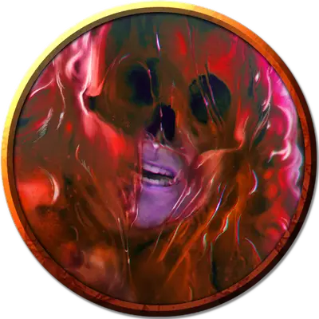

Повелитель слизи
Ooze Master
Огромная Нежить, законно-злая, именной НИП

Класс Доспеха 9 (природный доспех)
Хиты 138 (12к12 + 60)
Скорость 30 футов, лазая 30 футов
| мод | спас | ||
|---|---|---|---|
| СИЛ | 16 | +3 | +3 |
| ЛОВ | 1 | −5 | −5 |
| ТЕЛ | 20 | +5 | +5 |
| мод | спас | ||
|---|---|---|---|
| ИНТ | 17 | +3 | +7 |
| МДР | 10 | +0 | +4 |
| ХАР | 16 | +3 | +3 |
Навыки Магия +7, Проницательность +4
Сопротивление урону некротическая энергия, электричество; дробящий, колющий, рубящий от немагических атак
Иммунитет к урону кислота, холод, яд
Иммунитет к состояниям глухота, испуг, истощение, ослепление, отравление, очарование, паралич, сбивание с ног
Чувства слепое зрение 120 футов, пассивное Восприятие 10
Языки Общий, Первичный, Тэйский
Опасность 10 (5900 опыта)
Бонус мастерства +4
Особенности
Разъедающая форма. Существо, касающееся слизи или попадающее по ней рукопашной атакой, находясь в пределах 5 футов от нее, получает 9 (2к8) урона кислотой.
Любое немагическое оружие, изготовленное из металла, попадающее по слизи, начинает разъедаться. После причинения урона оружие получает постоянный накопительный штраф −1 к броскам урона. Если этот штраф дойдет до −5, оружие будет уничтожено. Немагические боеприпасы, изготовленные из металла или дерева, попадающие по слизи, уничтожаются после причинения урона.
Слизь может разъесть 2 дюйма немагического металла и дерева толщиной в 2 дюйма за 1 раунд.
Инстинктивная атака. Когда Повелитель слизи накладывает заклинание, время действия которого составляет "1 действие", он может нанести одну атаку Ложноножками бонусным действием.
Паучье лазание. Повелитель слизи может лазать по сложным поверхностям, включая потолки, без совершения проверок характеристик.
Использование заклинаний. Повелитель слизи является заклинателем 9-го уровня. Его базовой характеристикой является Интеллект (Сл спасброска от заклинания 15, +7 к попаданию атаками заклинаниями). Ему известны следующие заклинания волшебника:
• Заговор (неограниченно): брызги кислоты [acid splash], дружба [friends], волшебная рука [mage hand], ядовитые брызги [poison spray];
• 1 уровень (4 ячейки): очарование личности [charm person], обнаружение магии [detect magic], волшебная стрела [magic missile], луч болезни [ray of sickness];
• 2 уровень (3 ячейки): обнаружение мыслей [detect thoughts], Мельфова кислотная стрела [Melf's acid arrow], внушение [suggestion];
• 3 уровень (3 ячейки): ужас [fear], замедление [slow], зловонное облако [stinking cloud];
• 4 уровень (3 ячейки): смятение [confusion], Эвардовы чёрные щупальца [Evard's black tentacles];
• 5 уровень (1 ячейки): облако смерти [cloudkill].
Действия
Ложноножка. . Рукопашная атака оружием: +7 к попаданию, досягаемость 10 футов, одна цель. Попадание: 13 (3к6 + 3) дробящего урона плюс 10 (3к6) урона кислотой.
Реакции
Инстинктивное очарование. Если Повелителя слизи атакует видимое существо, находящееся в пределах 30 футов от него, он может реакцией заставить атакующего совершить спасбросок Мудрости Сл 15, и в случае провала тот нацеливается не на Повелителя слизи, а на ближайшее к себе существо, не считая себя. Атакующий сам выбирает между доступными целями, если их несколько.
В случае успеха атакующий получает иммунитет к этому Инстинктивному очарованию на 24 часа. Существа, которые не могут быть очарованы, невосприимчивы к этому эффекту.
Описание
В Бессмертных пещерах Сумеречного подземелья (Смерть в Тэе) обитает множество причудливых существ, самым странным из которых является, пожалуй, Повелитель слизи. Сначала он появляется в виде столба, состоящего из густой, красной, похожей на слизь субстанции. На самом деле существо находится внутри столба, и когда его пробуждают, оно выходит наружу со злыми намерениями.
Природа нежити. Повелителю слизи не нужны ни воздух, ни еда, ни питье, ни сон.